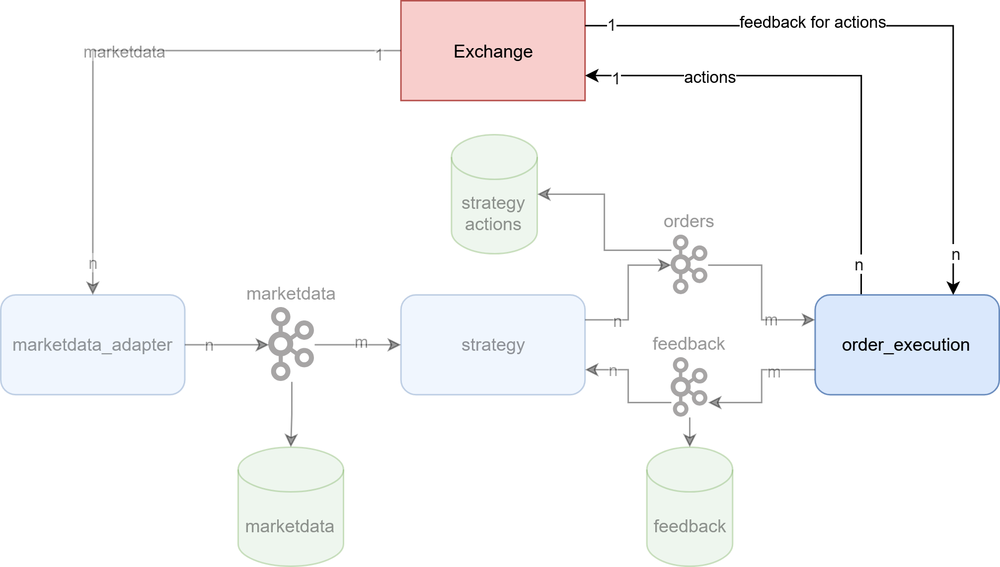

about me

- Software and Data Engineering Freelancer
- ~5 years of experience in exchange trading
- other industries: Infrastructure, automotive, logistics
- contact
agenda
- motivation
- fundamental trading concepts and market mechanics
- functional and non-functional requirements
- market data ingestion and processing
- serialization and component communication
- order management and execution
- implementation of trading strategies
- post-trade analysis
- outlook
motivation
money
easy access to markets
more control and flexibility
interesting exercise with different technical challenges
job opportunities
self-made is always better ( ;) )
fundamental trading concepts
trading
the activity of buying and selling things1
- buying apples for pears
- selling stocks for money
- buying eth coin for bitcoin
exchange
An exchange may be a physical location where traders meet to conduct business or an electronic platform.2
- also called market
- weekly markets in city center
- stock exchange
- crypto exchange
algorithmic trading
trading on international stock exchanges using computers that have been programmed to buy and sell shares according to fixed rules3
- also used for trading crypto or commodities (e.g. electricity)
- usually use orders and orderbooks for trading
orderbook
… order book refers to an electronic list of buy and sell orders for a specific security or financial instrument organized by price level.4
- order: offer to buy or sell - consists usually of
- price for one unit
- amount
- identifier
- orderbook: list of all orders for one specific good
- orderbook level: aggregated quantity of all orders for one price

trades and positions
- trade: an order that was executed ➡️ somebody else matched your order and you actually bought/sold a good
- position: accumulation of all trades for one specific good ➡️ how much do I actually have of a good
summary
- order: sell or buy offer
- orderbook: list of sell and buy offers for one good
- trade: I bought/sold a good for a price
- position: How much I have of a good
functional and non-functional requirements
functional requirements
I want to
- be able to trade goods with different algorithms on an exchange
- get insights about how I traded
- improve my trading systematically
non-functional requirements
I want to
- trade
- on different exchanges (Extensibility + Scalability)
- multiple goods (Scalability)
- using different (Extensibility + Scalability)
- have recordings about performed actions (Transparency + Compliance)
- be sufficiently fast to trade properly (Performance + Throughput)
technical requirements
I need for trading
- an API to receive marketdata to know what happens
- an API to send orders to exchange to trade
- an API to receive feedback about orders and trades
- to structure my components independently to connect them in multiple ways
I need for having records about performed actions
- to store what I did (orders, decisions)
- to store what my actions triggered (trades, order cancellations)
- to store what happens on the market (marketdata)
I need for being sufficiently fast to
- structure my components independently to scale them
- pick fast technologies
- pick a location as close as possible to the exchanges (if possible)

disclaimer
this is a proof of concept.
it shall demonstrate the typical architecture and components of a trading system.
in real world scenarios, with a bigger team and more resources you might use other approaches, especially faster technology.
due to low-barrier access, a crypto exchange - Kraken futures5 - was used for the proof of concept.
most exchanges have a simulation environment, that can be used for testing - also Kraken futures6.
marketdata ingestion and processing

general
- also called public data
- one orderbook per traded good
- essential for implementing trading strategies as current prices and quantities are provided
- mostly available as unidirectional data streams (e.g. via websockets, TCP or UDP)
- different types of data
- level 1 (or top of book) data: currently best buy (highest) and sell (lowest) offer
- level 2 data: excerpt from orderbook with top n levels
- level 3 (or tick-by-tick or order-by-order) data: each order and its state (placed, changed, removed)
- usually also information about trades
- level 3 data contains the most detail, but also has highest volume and is usually most expensive
marketdata ingestion
- trading strategies should be use-able on different exchanges
- different exchanges have different marketdata protocols
- decoupling of trading system from exchanges by normalizing marketdata to internal format via adapter pattern7
➡️ marketdata adapter
- per exchange
- receives marketdata from exchanges
- normalizes marketdata to internal representation
- forwards normalized marketdata to strategies
Kraken derivatives marketdata adapter
- subscribes to marketdata for different instruments
- via websocket
- exchange sends JSON (use orjson8 for fast parsing)
- L2 marketdata ➡️ orderbook levels
- on connect a snapshot is received: the whole orderbook
- consecutive messages are deltas: what changes to levels ocurred compared to previous message
- received marketdata is processed and sent to strategies
- not only transformation, but also keeps track of orderbooks
- sends each N minutes a snapshot to the strategies
Snapshot message
kraken futures
➡️
internal representation
class BaseMessage(BaseModel):
message_type: MessageType
class BookBase(BaseMessage):
timestamp: int
seq: int
product_id: str
class OrderBookEntry(BaseModel):
price: Decimal
qty: Decimal
class BookSnapshot(BookBase):
message_type: MessageType = MessageType.BOOK_SNAPSHOT
tickSize: Optional[Decimal]
bids: list[OrderBookEntry]
asks: list[OrderBookEntry]
Delta message
kraken futures
➡️
internal representation
class BaseMessage(BaseModel):
message_type: MessageType
class BookBase(BaseMessage):
timestamp: int
seq: int
product_id: str
class OrderbookSide(StrEnum):
BUY = "buy"
SELL = "sell"
class BookDelta(BookBase):
message_type: MessageType = MessageType.BOOK
side: OrderbookSide
price: Decimal
qty: Decimal
serialization and component communication

- to allow for redundancy: horizontal scaling
- horizontal scaling requires communication via network (otherwise unix sockets might have been an option)
- to send something via network it has to be serialized
serialization
the basic mechanisms are to flatten object(s) into a one-dimensional stream of bits, and to turn that stream of bits back into the original object(s). 9
possible candidates
- json
- protocol buffers (protobuf)
- flatbuffers
- msgpack
- pickle
- proprietary
communication
how to send serialized data over network to other component
possible candidates
- proprietary tcp
- proprietary udp (also multicast)
- REST (HTTP)
- gRPC (requires protobuf as serialization)
- event streaming or message broker (kafka, rabbitmq, …)
- database (postgres, mysql, …)
messagepack via kafka
why kafka
- fast
- established
- support in all (big) programming languages exist ➡️ consumer and producer are language independent (used kafka-python10)
- can be used as managed service in cloud
- many people with experience ➡️ easier to hire
- resilient
- messages can be replayed
- scalable: n producers to m consumers
- allows storing messages with separate consumer
- allows multiple producers on same channel (topic) for failovers
- does not require specific serialization
- disadvantages:
- no built-in mechanism to check whether consumers are gone
- has to be operated as a separate service
why messagepack
- allows conversion of arbitrary objects to bytes and back
- schemalass (e.g. in contrast to protobuf)
- fast
- established
- support in all (big) programming languages exist (used ormsgpack11 for python)
- backed and used by big products like redis, fluentd, pinterest
resulting architecture

order management and execution

sending orders
- trading strategies should be able to send orders to different exchanges
- different exchanges have different protocols for sending orders
- decoupling of trading system from exchanges by normalizing order sending via adapter pattern13
general order execution
- also sometimes called private data
- bidirectional - either send/receive via same or separate channels
- proprietary TCP
- input via HTTP/REST, feedback via websocket
➡️ order execution engine
- similar to marketdata adapter, but for outgoing orders (adapter pattern used)
- receives normalized order action from strategy
- per exchange
- converts normalized order action to exchange format
- sends order action to exchange
- receives order feedback from exchange
- normalizes order feedback from exchange
- sends order action feedback to strategy
order actions
- depending on order type and market, order actions and feedback can vary
- common order actions for orderbook trading
- place new order
- modify order price or quantity of active order
- cancel active order
- common feedback for orderbook trading
- action confirmations
- new
- modify
- cancelled
- trades, also called fills - order was fulfilled
- cancellations by exchange - can occur due to various reasons like market outages or compliance
- action confirmations
Kraken derivatives order execution
- placement of orders via REST
- different endpoints for different actions
- expects JSON as input
- feedback via websocket or REST polling ➡️ for proof of concept
websocket was selected
- same websocket endpoint as for marketdata adapter
- on connect a snapshot of the subscribed data is received
- consecutive messages are deltas: what changes to data ocurred compared to previous message
- order actions received from strategies are converted and forwarded to exchange
- feedback received from exchange is normalized and forwarded to strategies
TODO: add code and JSON excerpts
order handling caveats
- order actions can fail for various reasons
- cancel for already filled order
- modify for already filled order
- modify for already cancelled order (by exchange)
- due to distributed nature and latency to exchange, strategies might react too late ➡️ low latency helps up to a certain point
- most exchanges have rate limits
- limit possible actions per time period
- punish you if you try too often to violate them
- ➡️ paying more for higher rate limits or multiple accounts might help (if allowed)
- order execution engine can also keep track of orders to
- act proactively (e.g. don’t send cancel for filled order)
- keep track of rate limits and allow cancels in emergencies
{kind=link}